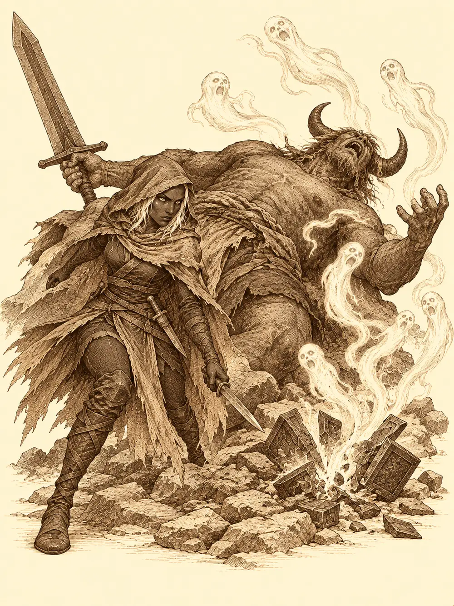

Capítulo 45
Devuélveme mi alma
Libro IV · Los guardianes del Oeste y del Este
Danifae tenía los pies encima de la mesa y una daga girando entre los dedos. Llevaba tres o cuatro días fuera, ocupada en unos trabajos de los que no pensaba dar explicaciones a nadie, y había vuelto a la casa del patio del castillo con la idea de descansar. No había contado con la música.
Eran tres músicos, junto al piano, y se entendían demasiado bien. El enano aporreaba un tambor enorme; Higeki rasgaba el laúd como si estuviera a punto de arrancarse a cantar, y Kasumi, la geisha que había empezado a acompañar a los cazadores, cantaba sentada al teclado con una voz que alguien habría llamado angelical en otro momento del día. Cada uno venía de lo suyo. El enano llevaba semanas estudiando cómo se movía el dinero en Sho, con la cabeza puesta en su casino. Kasumi se había sacado el permiso de alquimista y desde entonces vendía en el burdel unas cremas que, según juraba a las chicas, las harían más jóvenes y más hermosas; ninguna había rejuvenecido todavía, pero todas las compraban. Higeki, con acceso a los archivos del shogun, había pasado de las tragedias a los recetarios y andaba buscando postres de cerezas y fresas que acompañaran bien a una canción.
Lo peor llegó cuando Shizuka y Gluglu se sumaron con la flauta y el arpa. Los dos niños tocaban sin ritmo y sin piedad. Hasta el gato se había ido de la sala.
Danifae se levantó, cruzó entre ellos pisando fuerte y abrió la puerta para huir a su habitación. Se dio de bruces con Maroxi.
El mago sacó del bolso una esfera de cristal azul cielo. "Creo que esto es lo que me pediste".
A la drow se le iluminó la cara y alargó la mano. Él no la soltó.
"Antes quiero saber qué es. Me he jugado la vida por traerla".
La sonrisa de Danifae se apagó de golpe. "Digamos que es una esfera que necesito para abrir un templo". Él sacó el mapa de los cuatro santuarios y ella negó con la cabeza. "No, no. Necesito una piedra de cada uno de estos templos para abrir otro. No tiene nada que ver con esto".
No dijo cuál, ni para qué. Maroxi la miró un rato largo. Al final se encogió de hombros: cada uno tenía sus asuntos. Le dio la esfera y ella volvió a sonreír.
"¿Tuvisteis cuidado con las trampas? Os avisé".
Los gritos empezaron poco después, cuando el sol ya se escondía. Llegaban de la ciudad, muchos, y lo raro era que con el paso de los minutos se iban haciendo menos. Danifae tocó el hombro del enano para avisarle; el pálido de Maroxi había salido y había dicho que hacía falta ayuda. Shizuka, absorta con los instrumentos, prometió cuidar de Gluglu. La drow se echó la capucha sobre los ojos y salieron.
Las calles de Sho estaban llenas de gente tendida. Guardias, vecinos, mujeres con la cesta todavía en la mano. Nadie gritaba ya. Danifae se agachó junto a un soldado y le registró los bolsillos con la soltura de la costumbre: tres monedas. Después le dio con el pie a otro para ver si estaba muerto. No lo estaba, o no del todo. Tenía los ojos abiertos, la cara intacta, ni pulso ni aliento, y tampoco el aspecto de un cadáver. Parecía un muñeco con forma de persona. No había heridas, ni marcas de armas, ni nada que lo explicara.
En la tienda de alquimia, el alquimista dormía sobre su mesa. Sirth, el clérigo, yacía en el suelo de la taberna, y nadie detectó sobre él ni sobre los demás magia alguna que causara aquello. Danifae vio la ocasión y la aprovechó: metió la mano entre las ropas del clérigo inmóvil para robarle. Tuvo tanta prisa al sacarla que diez monedas suyas se le cayeron dentro de la ropa de Sirth sin hacer ruido, y se fue sin enterarse. El enano, por su parte, salió de la tienda del alquimista con una poción que nadie le había vendido y le dejó al herrero, que dormía sobre una forja medio vacía, una nota: "Si te falta material, contacta conmigo. Haremos negocios".
Kasumi encontró a un soldado en pie que intentaba ayudar a un hombre caído.
"La gente empezó a caerse", le dijo él, temblando. "Llegó un hedor, y empezaron a desvanecerse. Cada vez caen más".
Ella también lo olió, muy lejos. El soldado cayó a peso muerto en mitad de la frase, y Kasumi vio salir de su cuerpo una especie de neblina que se alejó flotando en una dirección concreta. En la taberna de enfrente, otro de los cazadores, Shiru, estaba derrumbado sobre la barra como tras una borrachera enorme. En el burdel, la dueña y sus clientes dormían unos encima de otros.
A Maroxi lo encontraron delante de la biblioteca, tendido junto a Toshi, en la postura de quien se había caído mientras hablaba. Danifae le dio un cachete. No reaccionó. Pero tenía algo agarrado en el puño, y ella se lo quitó: un papiro escrito en la lengua de los elfos. Hablaba de un artefacto capaz de guardar almas en su interior, una caja que era esfera y cubo a la vez y cambiaba de forma al palpitar, esfera, cubo, esfera, cada vez más deprisa cuanto más llena estaba.
"Una caja de almas", leyó en voz alta.
El enano recordó haber leído sobre yurei más fuertes que el resto, fantasmas que buscaban objetos así para su propio beneficio, y sobre uno en concreto que se alimentaba de almas. A Danifae también le sonaba un libro parecido de la biblioteca del palacio. Fue entonces cuando Kasumi contó lo de la neblina.
"¿Y no lo has dicho hasta ahora?", le reprochó Danifae.
"Entraste en la biblioteca y te llevaste el papel. Pensé que, como mujer, me entenderías".
El enano no esperó a que terminaran. Se transformó en un inugami, un hombre perro de hocico largo, olfateó el aire y captó un olor que no conocía, muy lejano. Echó a correr a cuatro patas. Los demás lo siguieron. Higeki, que iba leyendo su libro de tragedias sin mirar dónde pisaba, tropezó con un cuerpo y se dio de bruces contra el suelo. Danifae le tendió la mano con una sonrisa que no le gustó a nadie.
Las afueras estaban igual que la ciudad: un rastro de cuerpos inconscientes, como migas de pan, que se adentraba en el monte. Tardaron casi una hora en recorrerlo entre árboles y piedras. Al final había una gruta, y delante de ella, malherido junto a un árbol a medio talar, un medio orco al que conocían. Era Gur, el joven que siempre andaba buscando a alguien más fuerte con quien pelear.

"Esa criatura", jadeó. "No he podido con ella. Soy un débil". Era enorme, contó, muy fuerte, y llevaba algo oscuro en la mano, un cubo o una esfera, no lo había visto bien. Le había pedido pelea y lo había vencido.
Le metieron una poción en la boca. Kasumi le cerró las heridas con sus manos y uno de los músicos le recitó un relato sobre un ángel que pareció devolverle algo de aliento. Los huesos del medio orco se fueron soldando hasta que pudo tenerse en pie.
Entonces el suelo tembló. Por encima de las piedras de la gruta apareció de un salto una criatura alta como tres hombres, con cuernos, una espada enorme en una mano y en la otra una caja que palpitaba. No dijo nada. Se rio.
Desde un costado, con los brazos cruzados, una figura vestida de rojo los observaba sin moverse.
Danifae recitó unas palabras oscuras y envolvió la cabeza del gigante en una bola de oscuridad de la que solo sobresalían las puntas de los cuernos. Después se escondió detrás de un árbol. Gur no esperó a nadie. Se metió en la negrura con el hacha en alto, rugiendo, y se oyó el choque de dos cosas muy grandes.
"Esta vez te gano", gritaba.
Lo siguiente que oyeron fue algo parecido a un vómito. De la oscuridad salieron flotando unas formas que Kasumi reconoció enseguida: eran como la neblina del soldado, solo que ahora tenían forma. El gigante había vomitado espectros. Los espectros fueron directos a los músicos. Allí donde tocaban, dejaban una debilidad que no se curaba, como si a la vida le hubieran recortado los bordes.
Kasumi les metió miedo. Higeki les susurró cosas terribles, y el enano inspiraba a todos con su tambor. Danifae salía de su escondite, clavaba las dagas y volvía a desaparecer. Uno de los espectros cayó y su alma se elevó, y el gigante la aspiró como quien sorbe un caldo. Se la comió. Luego lo hizo con otra.
La caja palpitó. Gur, en mitad de un golpe, se quedó quieto y se derrumbó, igual que los vecinos de Sho. Kasumi corrió hasta él y le cerró las heridas con su magia, una tras otra, y las carnes del medio orco se cosían ante sus ojos. No despertó. No reaccionaba a nada.
El gigante arrojó una roca. El enano le contó entonces un chiste tan malo que la criatura cayó al suelo de la risa, y entre todos le fueron echando encima lentitud, torpeza, cuanto tenían. Pero la caja volvió a palpitar, esfera, cubo, esfera, cada vez más rápido, y de los cuerpos de Kasumi y del enano salió una neblina blanca, menos humana que los espectros, que atravesó la pared del objeto y no volvió a verse. Los dos se quedaron tendidos junto a Gur.
Solo quedaban Higeki y Danifae.
La drow se plantó delante del gigante, que brillaba en la oscuridad del bosque bajo la luz de un hechizo y no tenía dónde esconderse. Su daga lo alcanzó en los ojos y lo dejó ciego. Higeki, con el estoque, pinchaba y pinchaba, y entre pinchazo y pinchazo le susurraba. El monstruo apenas se movía ya, lento, cegado, asustado. Pero cada vez que estaba a punto de caer, agarraba la caja, sorbía de ella una de aquellas almas y cogía fuerzas. Lo hizo tres veces. Danifae, apoyada en una columna de piedra, le hablaba de la cerveza que se tomarían después mientras seguía clavándole la hoja.
La herida final se la dio ella. El gigante cayó de espaldas con un estruendo, y la caja se le escapó de la mano, rodó por las piedras y se rompió.
De ella salieron volando espectros en todas direcciones. Uno entró en el cuerpo de Gur, otro en el de Kasumi, otro en el del enano, y los tres despertaron con una sacudida. El enano se levantó convencido de que la criatura seguía tendida en el suelo muerta de risa. La carne del gigante se iba volviendo ceniza y, en unos instantes, solo quedó un rastro gris en la entrada de la cueva. El enano lo recogió en una bolsa pequeña.
Gur fue el primero en protestar.
"Ese combate era mío. Le iba ganando".
El enano le enseñó la bolsa con las cenizas. "Lo hemos matado entre todos. Tampoco era tan difícil".
"Ninguno de vosotros podría haberse enfrentado a él como yo".
"No somos tontos".
"¿Quién ha dicho eso?". Gur desenfundó el hacha de dos manos. "¿Quieres pelear conmigo? Vamos a pelear".
El enano quiso apartarse y no pudo. El primer hachazo lo tiró al suelo y el segundo lo dejó sangrando; el tercero podía matarlo. Los demás se interpusieron. Alguien le sujetó el brazo al medio orco y le habló con calma: volverse fuerte a costa de los débiles era volverse débil. Gur se lo pensó.
"No juzgues a un licor por su botella", le dijeron. "Confía en su contenido".
El medio orco bajó el hacha y le tendió la mano al enano para levantarlo. "Vamos a tomar unas cervezas".
Danifae se volvió antes de irse. La figura de rojo había desaparecido. Nadie la había visto marcharse.
En Sho había vuelto el ruido. La gente se levantaba aturdida, se tocaba la cara, preguntaba qué había pasado. Maroxi estaba en pie junto al bibliotecario, palpándose los bolsillos.
"Tenía un papel. Hay que tener cuidado, es un objeto que almacena almas".
Danifae se lo tiró encima. Él preguntó por la caja.
"Creo que se ha desvanecido. No me he preocupado mucho de eso".
"Hay que recuperarla. Es muy peligrosa".
Ella señaló hacia el monte con desgana. Todo recto, en el tercer árbol a la derecha, había una cueva; si estaba en algún sitio, estaría por allí. Maroxi salió corriendo sin preguntar cómo estaban ni cómo había ido la pelea.
El enano fue a ver al herrero. Lo encontró despierto pero aturdido, delante de una forja donde todo lo que había dejado a medias se había estropeado. Le tendió la bolsa de ceniza del demonio y le dijo que hiciera con ella lo que quisiera. El herrero la miró y la apartó. Con ceniza no se podía hacer gran cosa en una herrería, quizá teñir algo. El enano le dijo que le faltaba imaginación, el herrero le recordó que todo el ejército del shogun iba armado por sus manos, y aquello acabó con el enano dando un portazo y marchándose sin encargo alguno.
Casi todos se habían levantado. Casi. Dos soldados seguían tendidos en la calle. En toda la ciudad fueron nueve los que no volvieron a despertar: sus almas habían sido las que el gigante se comió o las que salieron de él convertidas en espectros y murieron bajo las armas de los cazadores. Sus cuerpos estaban enteros, sin un rasguño, y ya no eran de nadie.
En la taberna, Gur pidió la primera ronda.